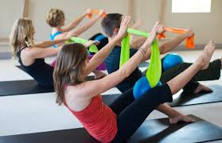
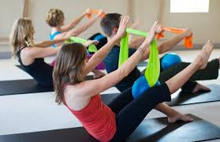

BIENVENIDO A MYND & BODY
Los centros deportivos MYND & BODY con sus 30 años de experiencia en el sector de la actividad física, ofrecen a sus socios un espacio de entrenamiento bien equipado con un servicio de calidad en el que recibirás un trato cercano, familiar y profesional. Nuestros centros cuentan con una gran variedad de actividades dirigidas, hasta 150 clases a la semana, en donde podrás alcanzar todos aquellos objetivos que te hayas marcado, gracias a un gran equipo de profesionales que te ayudaran en todo momento.
Visite todas las actividades que tenemos para ofrecerle:
- Yoga.
- Pilates.
- HIIT.
- Spinning.
- Entrenamiento funcional.
- Actividades de Baile.
- Actividades de combate.
- Actividades de Agua.
YOGA
El Yoga sirve para ayudarte a completar la preparación que otras variantes de fitness no pueden aportarte. El yoga es bueno en rutinas de perder peso, según la ACSM y sobre todo de cara a mejorar aspectos muy concretos de la salud. "Es bueno para mejorar la salud de tu corazón, alivia el estrés y mejora la salud mental".Es muy bueno porque mejora nuestra conciencia del cuerpo, nos ayuda a respirar mejor ya que es bastante difícil respirar y hacer algunos ejercicios concretos, y te hace sentir todos los músculos del cuerpo.
Si te interesa esta clase registrate
PILATES
 

El pilates es un método de ejercicio y movimiento físico diseñado para estirar, fortalecer y equilibrar el cuerpo. Con la práctica sistemática de ejercicios específicos junto con los patrones de respiración, Pilates ha demostrado tener un valor incalculable no sólo para las personas que quieren mantener su condición física, sino también como un importante complemento a la práctica deportiva y rehabilitación física de todo tipo.Aumenta la fuerza sin exceso de volumen, creando un cuerpo elegante y armónico con los muslos delgados y un abdomen plano. Enseña a conocer mejor el cuerpo, mantener mejor postura y conseguir un movimiento más fácil y elegante. Pilates mejora la flexibilidad, agilidad y economía de movimientos, y puede ayudar a aliviar el dolor de espalda, así como otras enfermedades
Si te interesa esta clase registrate
HIIT
Esta modalidad de entrenamiento que se volvió tendencia en el último tiempo por todos los beneficios que conlleva para la salud y el rendimiento físico, consiste en alternar períodos cortos de ejercicio de alta intensidad con períodos de recuperación o ejercicio ligero, por una duración de únicamente 10 o 15 minutos como mucho.Lo fundamental y característico de este método de entrenamiento, consiste en hacer los ejercicios en máxima intensidad, es decir, literalmente “darlo todo” durante los segundos de actividad, que se van intercalando con segundos de descanso, para de esta manera lograr los objetivos dispuestos.
Si te interesa esta clase registrate
SPINNING
En las sesiones de spinning, que tienen una duración media de 45 minutos, se trabaja sobre todo el tren inferior, es decir, las piernas y los glúteos. Sin embargo, también se trabajan otros músculos como los dorsales, los lumbares o el trapecio así como los bíceps y los tríceps. Su finalidad principal es perder peso y la tonificación de los músculos, además de mejorar la fuerza y la resistencia.El spinning es una de las prácticas deportivas que menos riesgo de lesión tiene al ser un ejercicio de bajo impacto. Ayuda a combatir el estrés,Tonifica tu cuerpo, mejora la salud cardiovascular, sube el autoestima y fomenta las relaciones.
Si te interesa esta clase registrate
ENTRENAMIENTO FUNCIONAL


El entrenamiento funcional es una gama de ejercicios físicos que te permiten entrenar tus músculos para trabajar juntos y prepararlos para realizar tareas cotidianas con mayor facilidad y sin lesiones. Los beneficios de este entrenamiento son que da resultados rapidos, permite manejar y desarrollar nuestras cualidades fisicas, reduce los kilos de mas, mejora nuestra postura y estabilidad, sirve de complemento para otras disciplinas, mejora la fuerza del nucleo y evita lesiones, entre otros.
Si te interesa esta clase registrate
ACTIVIDADES DE BAILE


Para esta Actividad contamos con 4 opciones:
Zumba
Practicar zumba, combina la diversión con el trabajo, de una forma dinámica y sencilla. Consiste en ejecutar una serie de pasos de dificultad media, a son de salsa, merengue, bachata y otros ritmos latinos. No es necesaria experiencia previa, ya que se van repitiendo las coreografías de manera que puedas aprenderlas de progresivamente.
Danza del vientre
La danza del vientre, o danza oriental, es un tipo de baile muy sensual que ayuda a moldear la figura. Es muy recomendable para tonificar el abdomen y fortalecer la musculatura pélvica. Se trata de una de las danzas más antiguas del mundo. Además, requiere material como el pañuelo, con el que podrás sentirte muy involucrada en la práctica de esta modalidad tan beneficiosa para el cuerpo
Ballet fit
Cada vez es más popular por su gran cantidad de beneficios para el cuerpo y la mente. Se trata de llevar la disciplina más estricta del ballet clásico al mundo del fitness. Las sesiones de Ballet Fit, se dividen en tres partes: barra, cardio y suelo. La duración de cada sesión es de una hora y no se requiere experiencia previa.
Aerodance
El aerodance es una de las clases de baile con más seguidores en los gimnasios. Y es que se trata de una disciplina muy divertida que combina diferentes ritmos.Es muy recomendada para aquellas personas que quieran realizar ejercicio físico, pero no encuentren una actividad que les motive. En el caso del aerodance, podrás mantenerte en forma de una manera divertida y original. Si te gusta bailar, aprenderás a hacerlo al ritmo de jazz, tango o aeróbic. En ocasiones se utiliza step para dotar de más intensidad al movimiento. Si te llama la atención, ¡no te quedes sin probarlo!
Si te interesa alguna de estas clases registrate
ACTIVIDADES DE COMBATE


Para los practicantes, el deporte de combate ciertamente tiene muchas ventajas, especialmente en relación con sus beneficios para el cuerpo: desarrolla velocidad, resistencia, reflejos y coordinación. Como casi cualquier actividad deportiva, la práctica del deporte de combate también estimula el corazón y la circulación. Además, mejora la flexibilidad y expande el conocimiento del cuerpo.
Si te interesa esta clase registrate
ACTIVIDADES DE AGUA


El Aquagym es un tipo de fitness acuático cuyos ejercicios se centran en la tonificación muscular, en las repeticiones y en el trabajo con diferentes materiales, como pesas, pelotas y flota-flotas, entre otros. En esencia, el Aquagym trata de trasladar al medio acuático el trabajo físico que se realiza en tierra, eso sí, contando con todas las posibilidades de movimiento que aporta el medio acuático.La ventaja de entrenar en condiciones de inmersión es que la flotación promovida por el agua reduce el riesgo de lesiones y, por tanto permite que algunos pacientes participen de programas de entrenamiento aeróbico (para esas personas sería muy difícil hacerlo en tierra). La hipogravidez (escasez de gravedad) permite la disminución del impacto del cuerpo con el suelo y, con esto, la tensión sobre las articulaciones. Esta característica hace que los ejercicios en el agua puedan ser más duraderos y frecuentes. También permite que personas con movilidad reducida puedan beneficiarse de la liberación de peso que aporta el agua. El beneficio psicológico en este sentido es indudable.
Si te interesa esta clase registrate